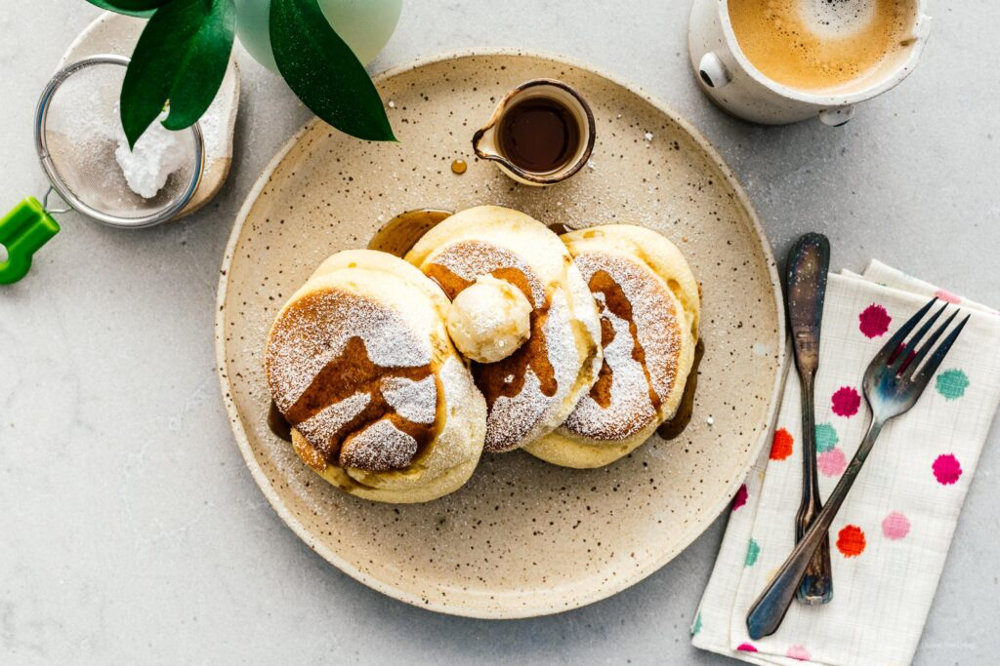

×
Find a Recipe
Food recipes

Find a Recipe

How to eat more fruits and vegetables
Thanksgiving
Halloween
The big guide
Vegetarian recipes
Our new recipes

This pumpkin bread is so good: each slice is packed with pumpkin,
incredibly moist, and full of warming pumpkin spice. There won't be any crumbs left!
The perfect springtime muffin to remind you
of warmer days ahead filled with summer strawberries.
What could be better than holding something in your hand and eating it?
It’s the ultimate in minimalism.
Spring rolls are the one thing I can never refuse, no matter how full I am.

Want fluffy Japanese pancakes but can't fly to Tokyo? This recipe is for you!